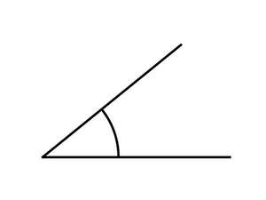

Trade Mark Journal No.2025/029 18 July 2025
UK00004229676 6 July 2025 (25,35,41)

- Class 25
- Parts of clothing, footwear and headgear; Clothing; Footwear; Gloves [clothing]; Gloves as clothing; Headbands [clothing]; Headbands for clothing; Visors [clothing]; Jackets [clothing]; Woolen clothing; Jackets being sports clothing; Gloves for apparel; Knitwear [clothing]; Headgear for wear; Jerseys [clothing]; Leather clothing; Clothing of leather; Leather (Clothing of -); Footwear [excluding orthopedic footwear]; Clothing for leisure wear; Ready-to-wear clothing; Athletic clothing; Sneakers [footwear]; Braces for clothing; Garments for protecting clothing; Clothing for sports; Sports clothing; Oilskins [clothing]; Rainproof clothing; Headgear; Muffs [clothing]; Wristbands [clothing]; Corsets [clothing, foundation garments]; Belts for clothing; Belts [clothing]; Latex clothing; Waterproof clothing; Veils [clothing]; Golf clothing, other than gloves; Collars [clothing]; Gabardines [clothing]; Capes (clothing); Wooden shoes [footwear]; Bandeaux [clothing]; Aprons [clothing]; Kerchiefs [clothing]; Shorts [clothing]; Furs [clothing]; Men's clothing; Hoods [clothing]; Mitts [clothing]; Water-resistant clothing; Embroidered clothing; Insoles for footwear; Footwear for sport; Footwear for use in sport; Clothing for wear in judo practices; Clothing for gymnastics; Knitted clothing; Footwear for sports; Sports footwear; Footwear for snowboarding; Clothing for wear in wrestling games; Party hats [clothing]; Leather belts [clothing]; Sports clothing [other than golf gloves]; Denims [clothing]; Weatherproof clothing; Athletic footwear; Footwear for men; Footwear for women; Flip-flops for use as footwear; Windproof clothing; Trunks being clothing; Casual clothing; Jackets (Stuff -) [clothing]; Stuff jackets [clothing]; Dance clothing; Sports headgear [other than helmets]; Bottoms [clothing]; Layettes [clothing]; Clothing layettes; Clothing for cycling; Clothing for horse-riding [other than riding hats]; Maternity clothing; Cashmere clothing; Casual footwear; Leather headwear; Leisure clothing; Hats (Paper -) [clothing]; Paper hats [clothing]; Fabric belts [clothing]; Sports garments.
- Class 35
- Business management; Business management consultancy; Business management and consultancy; Business management services; Business management and consulting; Business management consulting; Commercial business management; Business management organisation; Business management and enterprise organization consultancy; Business management and organization consultancy; Business administration and management; Business management and administration; Business management planning; Business accounts management; Business management supervision; Interim business management; Business project management; Business organization and management consulting; Business organisation and management consulting; Business project management services; Business management consultancy services; Business management and consultancy services; Business management and organization consultancy services; Business management consulting services; Business management and consulting services; Business management of entertainers; Advisory services relating to business management and business operations; Consulting services in business organization and management; Business management of models; Advisory services for business management; Business management advisory services; Management (Advisory services for business -); Business management of restaurants; Business management analysis; Business risk management services; Risk management consultancy [business]; Business management and organisation consultancy; Business management organisation consultancy; Business process management; Business management of hotels; Hotels (Business management of -); Business process management consultancy; Assistance (Business management -); Assistance with business management; Business management assistance; Business management services for footballers; Business organisation and management consultancy; Business management consultation; Business management and consultation; Business organisation and management consulting services; Business management of hospitals; Business management advice relating to manufacturing business; Business management advice; Business management of actors; Business process management and consulting; Business file management; Business management of musicians; Advice in the field of business management and marketing; Business management of an airline company; Business management and organisation consultancy services; Consultancy relating to business management; Business management of theaters; Business management for shops; Business organization and management consultancy including personnel management; Business records management; Business organisation and management consultancy in the field of personnel management; Business management consultancy in the field of corporate travel; Consultancy and advisory services for business management; Business management consultancy and advisory services; Professional consultancy relating to business management; Business management for a trade company and for a service company; Commercial assistance in business management; Business management and consultation services; Business management of retail outlets; Business marketing consultancy; Business management advisory services relating to franchising; Business management advisory services relating to industrial enterprises; Business marketing services; Business management services relating to the development of businesses; Business management advisory services relating to commercial enterprises; Management assistance in business affairs; Advisory services and information in business organization and management; Analysis of business management systems; Business management for freelance service providers; Advisory services (Business -) relating to the management of businesses; Veterinary practice business management; Business management of entertainment venues; Business management services relating to the acquisition of businesses; Business management assistance in the field of franchising; Management of business [for others]; Assistance in franchised commercial business management; Consultancy relating to business management and organisation; Advisory services relating to business management; Business management of sports people; Business management consultancy in the field of executive and leadership development; Business marketing consulting services; Business management consultancy via the Internet; Business management of professional athletes; Assistance in management of business activities; Business management assistance in the operation of restaurants; Business management of logistics for others; Consultancy regarding business organisation and business economics; Assistance to commercial enterprises in the management of their business; Advisory services relating to business organisation and management; Business planning and business continuity consulting; Evaluations relating to business management in professional enterprises; Provision of business management information; Corporate management consultancy; Business management of conference centers; Consultancy and advisory services relating to business management; Providing advice in the field of business management and marketing; Business assistance, management and administrative services; Business administration consultancy; Corporate management consultancy services; Management assistance for promoting business; Evaluations relating to business management in commercial enterprises; Evaluations relating to business management in industrial enterprises; Business management of sports personalities; Business management consultancy in the field of transport and delivery; Business strategy services; Advisory services relating to business risk management; Business organization consultancy; Business organization and operation consultancy; Business consultancy; Business management of wholesale outlets; Business management consulting services in the field of information technology; Business management assistance for industrial or commercial companies; Consultancy relating to business document management; Computerised business management [for others]; Advisory services (Business -) relating to the management of public sector businesses; Advertising; Advertising and marketing; Advertising and advertisement services; Advertising and publicity; Publicity and advertising; Advertising and marketing services; Advertising, marketing and promotional services; Advertising, promotional and marketing services; Marketing, advertising, and promotional services; Banner advertising; Television advertising; Advertising services of a radio and television advertising agency; Advertising and marketing consultancy; Advertising, marketing and promotion services; Marketing, advertising and promotion services; Advertising and promotional services; Promotional and advertising services; Promotional advertising services; Online advertising; Advertising and publicity services; Newspaper advertising; Leasing of advertising billboards; Advertising agencies; Advertising services; Hire of advertising billboards; Copywriting for advertising and promotional purposes; Electronic billboard advertising; Recruitment advertising; Radio advertising; Promotion [advertising] of business; Promotion, advertising and marketing of on-line websites; Leasing of advertising hoardings; Mail-order advertising; Magazine advertising; On-line advertising and marketing services; Advertising and promotion services; Outdoor advertising; Cinema advertising; Radio advertising and commercials; On-line advertising; Advertising research; Hire of advertising hoardings; Promotion [advertising] of travel; Advertising services provided by a radio and television advertising agency; Advertising of cinemas; Design of advertising flyers; Graphic advertising services; Advertising services for the promotion of e-commerce; Distribution of advertising, marketing and promotional material; Advertising agency services; Mediation of advertising; Digital advertising services; Dissemination of advertising, marketing and publicity materials; Classified advertising; Design of advertising brochures; Rental of advertising space on the Internet for employment advertising; Distribution of advertising brochures; Advertising planning; Preparation of advertising campaigns; Modeling for advertising or sales promotion; Arrangement of advertising; Modelling for advertising or sales promotion; Advertising analysis; Advertising consultation; Promotion [advertising] of concerts; Online advertising services; Consultancy services relating to advertising, publicity and marketing; Response advertising; Rental of billboards [advertising boards]; Advertising flyer distribution; Political advertising services; Press advertising services; Rental of advertisement space and advertising material; Modeling services for advertising or sales promotion; Advertising services for the promotion of beverages; Advertising, promotional and public relations services; Scriptwriting for advertising purposes; Production of advertising matter and commercials; Elevator advertising; Services of advertising agencies; Advertising research services; Press advertising consultancy; Research services relating to advertising and marketing; Distribution of advertising announcements; Design of advertising logos; Brand creation services (advertising and promotion); Dissemination of advertising and promotional materials; Classified advertising services; Hiring of advertising materials; Direct market advertising; Advertising for others; Advertising, including on-line advertising on a computer network; Exhibitions for commercial or advertising purposes; Promotional advertising for exploration projects; Promotional marketing; Radio and television advertising; Post-production editing of advertising or commercials; Market research for advertising; Rental of advertisement billboards; Advertisement billboards (Rental of -); Distribution of advertising leaflets; Advertising and marketing services provided by means of social media; Web indexing for commercial or advertising purposes; Consultancy relating to advertising; Distribution of advertising materials; Rental of advertising material; Advertising of business web sites; Planning services for advertising; Advertising services for the literary industry; Advertising services relating to newspapers; Advertising text publication services; Publication of advertising literature; Advertising services for architects; Advertising, marketing and promotional consultancy, advisory and assistance services; Arranging of advertising in cinemas; Marketing; Design of advertising materials; Production of advertising materials; Advertising and marketing services provided by means of blogging; Rental of signs for advertising purposes; Distribution of advertising mail and of advertising supplements attached to regular editions; Modelling agency services for advertising purposes; Publication of advertising texts; Advertising matter (Production of -); Production of advertising matter; Organisation of customer loyalty programs for commercial, promotional or advertising purposes; Dissemination of advertising materials; Organisation of exhibitions for commercial or advertising purposes; Advertising flyer distribution for others; Advertising particularly services for the promotion of goods; Organisation of exhibitions for commercial and advertising purposes; Distribution of products for advertising purposes; Modelling and models for advertising or sales promotion; Advertising services to promote the sale of beverages.
- Class 41
- Providing of training; Providing training; Providing courses of training; Providing of continuous training courses; Providing of training, teaching and tuition; Providing of further training courses; Providing online training seminars; Providing sports training facilities; Providing of education; Practical training services; Educational certification services, namely, providing training and educational examination; Providing training and educational examination for certification purposes; Providing obstacle course training gym facilities; Providing courses of training for young people; Educational and training services; Training; Educational services for providing courses of instruction; Training services; Providing continuing medical education courses; Training and further training consultancy; Providing training courses on business management; Training and education services; Education and training services; Educational services for providing courses of education; Providing on-line information and news in the field of employment training; Providing continuing nursing education courses; Education and training; Provision of training and education; Provision of education and training; Providing courses of instruction; Providing continuing legal education courses; Educational establishments providing courses of instruction (Services of -); Providing of training in the field of health care and nutrition; Providing continuing dental education courses; Training services relating to first aid; Provision of training; Educational and training services relating to sport; Instructional and training services; Practical training; Education, teaching and training; Provision of online training; Educational and training services relating to healthcare; Vocational training services; Education services relating to vocational training; Conducting training courses relating to nutrition online; Continuous training; Education and training services delivered by virtual means; Physical training services; Medical training and teaching; Educational services relating to sales training; Advanced training; Providing educational demonstrations; Training services relating to fitness; Staff training services; Vocational education and training services; Providing animal exercise services; Recreation and training services; Teacher training services; Career information and advisory services (educational and training advice); Manufacturing training services; Educational and training services relating to games; Guidance (Vocational -) [education or training advice]; Training services provided via simulators; Training in catering; Provision of training courses; Training courses (Provision of -); Providing facilities for educational purposes; Vocational guidance [education or training advice]; Education and training consultancy; Conducting workshops [training]; Fitness training services; Providing information in the field of education; Career advisory services (education or training advice); Training services for nurses; Courses (Training -) relating to customer services; Conducting training seminars; Training services relating to computer-aided testing; Educational and entertainment services, namely, providing motivational speaking services; Conducting of courses relating to administrative training; Engineering training services; Provision of training courses in personal development; Education services relating to business training; Conducting training seminars for clients; Arranging and conducting of training courses; Providing online courses of instruction; Training or education services in the field of life coaching; Training services relating to design; Provision of training courses for young people in preparation for employment; Workshops for training purposes; Management training services; Vocational training; Providing education courses relating to the travel industry; Providing fitness and exercise facilities; Advisory services relating to training; Vocational training courses (Provision of -); Coaching [training]; Providing computer assisted courses of instruction; Consultancy services relating to training; Training and instruction; Consultancy services relating to the development of training courses; Training services for personnel; Aerobics training services; Provision of training services for industry; Arranging and conducting of lectures for training purposes; Conducting of tours for training purposes; Personal training services; Employment training; Linguistic education and training services; Education services relating to the training of personnel in food technology; Providing non-downloadable electronic publications relating to language training; Training of toast-masters; Arranging of training courses; Training facilities (Provision of -); Provision of training facilities; Training services for nannies; Career counselling relating to education and training; Conducting training courses relating to diet online; Consultancy services relating to the training of employees; Provision of training services for business; Educational services providing instruction in land policy; Computer education training services; Computer assisted training services; Career counselling [training and education advice]; Consultancy services relating to the education and training of management and of personnel; Arranging professional workshop and training courses; Gymnasium services relating to weight training; Training services relating to logistics; Conducting workshops [training] relating to engine maintenance; Arranging and conducting of soccer training programs; Vocational skills training (Provision of -); Providing instruction and equipment in the field of physical exercise; Publication of educational and training guides; Arranging and conducting of training seminars; Workshops (Arranging and conducting of -) [training]; Arranging and conducting of workshops [training]; Arranging and conducting of training workshops; Conducting educational support programmes for healthcare professionals; Providing cultural activities; Entertainment, sporting and cultural activities; Sporting and cultural activities; Cultural and sporting activities; Sporting and recreational activities; Sporting activities; Organisation of events for cultural, entertainment and sporting purposes; Providing will-call ticket services for entertainment, sporting and cultural events; Coaching services for sporting activities; Entertainment services in the nature of sporting events; Instruction in sporting activities; Providing information about sporting activities; Cultural activities; Organizing community sporting and cultural events; Entertainment services relating to sporting events; Sporting education services; Recreational services relating to bob-sledding; Providing facilities for recreational activities; Conducting of cultural activities; Educational services relating to sports; Providing information about cultural activities; Entertainment services in the nature of organizing social entertainment events; Organising of sporting activities and of sporting competitions; Sporting services; Providing educational entertainment services for children in after-school centers; Providing facilities for recreation activities; Providing facilities for sporting events, sports and athletic competitions and awards programmes; Providing user rankings for entertainment or cultural purposes; Organisation of entertainment and cultural events; Providing facilities for sports events; Providing information relating to recreational activities; Entertainment services in the nature of arranging social entertainment events; Advisory services relating to the organisation of sporting events; Providing user reviews for entertainment or cultural purposes; Conducting of entertainment activities; Educational and instruction services relating to sport; Education, entertainment and sport services; Educational services relating to physical fitness; Organisation and holding of fairs for cultural or educational purposes; Organisation of sporting activities and competitions; Instruction courses relating to sporting activities; Cultural, educational or entertainment services provided by art galleries; Entertainment services relating to sport; Providing facilities for sports recreation; Organising of sporting activities and competitions; Organising of sporting activities or competitions; Educational services relating to religious development; Providing user ratings for entertainment or cultural purposes; Information relating to cultural activities; Educational services relating to dancing; Rental services relating to equipment and facilities for education, entertainment, sports and culture; Organisation of animal exhibitions for cultural or educational purposes; Cultural services; Country clubs providing sporting facilities; Organization of exhibitions for cultural or educational purposes; Exhibitions (Organization of -) for cultural or educational purposes; Organization of exhibitions for cultural and educational purposes; Organisation of recreational activities; Sports activities; Educational services for the dramatic arts; Arranging of exhibitions for cultural or educational purposes; Entertainment services in the nature of skating events; Administration [organisation] of cultural activities; Training services relating to subaquatic activities; Organisation of exhibitions for cultural and educational purposes; Organisation of exhibitions for cultural or educational purposes; Handicapping services for sporting events; Educational services relating to spiritual development; Provision of facilities for outdoor recreational activities; Organising community sporting events; Conducting of cultural events; Instructional services for bob-sledding; Organizing cultural and arts events; Ticket reservation and booking services for education, entertainment and sports activities and events; Social club services for entertainment purposes; Sports entertainment services; Arranging of seminars relating to cultural activities; Conducting of educational events; Education services relating to sports; Providing sports facilities; Providing of sports facilities; Arranging and conducting of sports events for charitable purposes; Arranging and conducting of cultural activities; Providing sports information; Organisation of cultural activities for summer camps; Recreational services relating to hiking; Education, entertainment and sports; Educational services providing workshops in land policy; Arranging and conducting of entertainment events for charitable fundraising purposes; Provision of recreational activities; Organization of events for cultural purposes; Services for providing recreational facilities; Providing facilities for entertainment; Organising events for cultural purposes; Arranging and conducting of educational events for charitable purposes; Organization of sporting events; Arranging and conducting of entertainment events for charitable purposes; Provision and management of sporting events; Educational services relating to cooking; Providing sports facilities for skiing; Sports education services; Arranging of conferences relating to cultural activities; Organisation of entertainment activities for summer camps; Ticket information services for sporting events; Providing online newsletters in the fields of sports entertainment; Provision of sporting events; Educational and instruction services relating to arts and crafts; Conducting guided tours of cultural sites for educational purposes; Arranging and conducting of live entertainment events for charitable purposes; Entertainment services in the nature of competitions; Providing recreational facilities; Organization of competitions [education or entertainment]; Competitions (Organization of -) [education or entertainment]; Organization of competitions for education or entertainment; Entertainment in the form of television programmes (Services providing -); Organisation of educational activities for summer camps; Recreational services relating to back-packing; Religious educational services; Providing sports facilities for archery; Organising community cultural events; Services providing entertainment in the form of live musical performances; Entertainment in the form of live musical performances (Services providing -); Services for the organisation of sports events; Educational services relating to business; Educational services in the nature of coaching.
DLC 39 DEGREE LTD